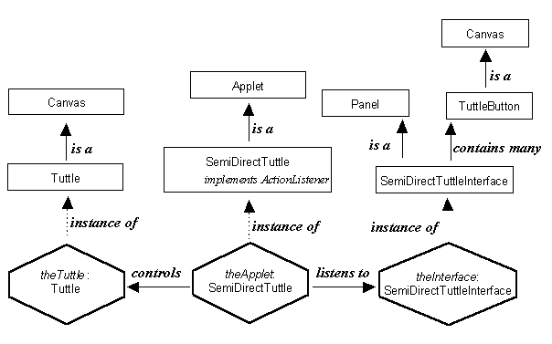

The instance diagram for the SemiDirectTuttle applet is presented in Figure 5.5. It shows that theApplet is an instance of the SemiDirectTuttle class which extends the Applet class and implements the ActionListener interface. This allows it to listen to events which are generated by an instance of the SemiDirectTuttleInterface, which extends the Panel class and contains the TuttleButtons which the user will press to command the Tuttle. The events listened to by the SemiDirectTuttle application result in calls of the theTuttle actions causing the Tuttle to react. In terms of the application, translation, presentation design philosophy: the Tuttle instance contains the application and also provides its own presentation aspects, the SemiDirectTuttleInterface instance presents the controls to the user and the SemiDirectTuttle instance supplies the translation aspects. All of these classes will be implemented within a package called SemiDirectTuttle.

Figure 5.5 SemiDirectTuttle instance diagram.